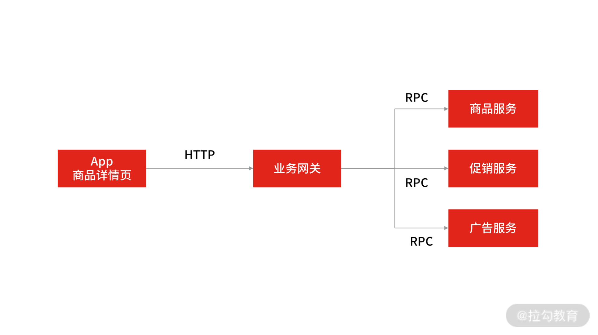
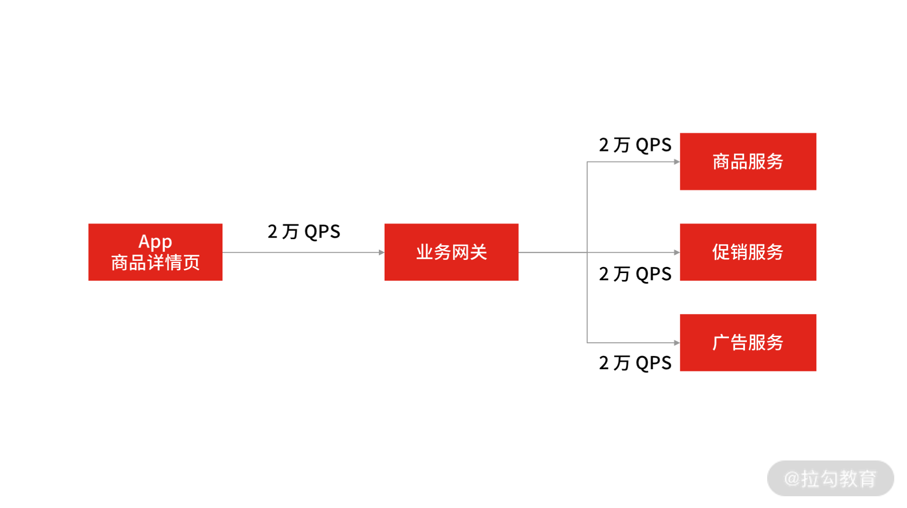
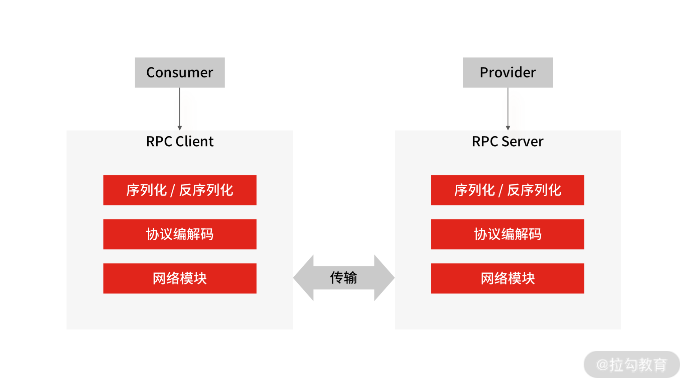
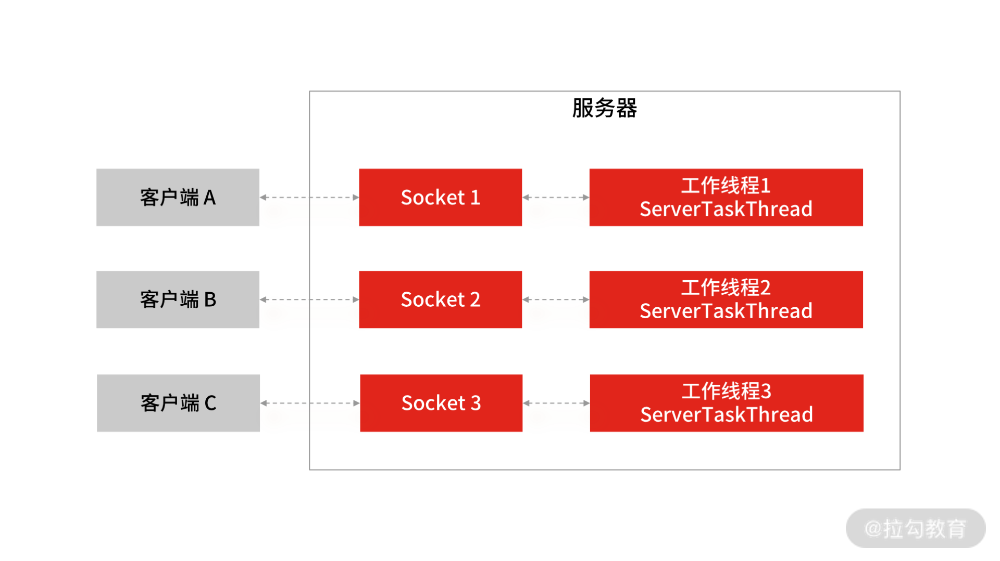
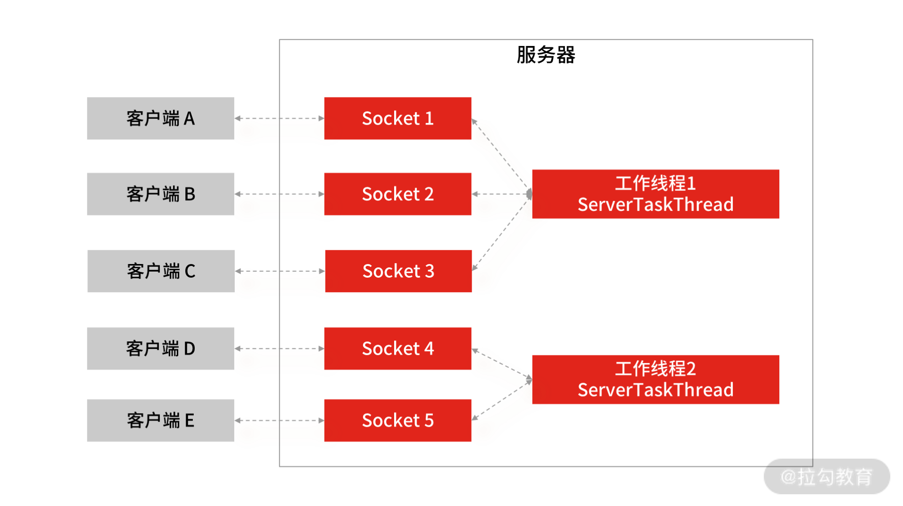

- 00 开篇词 中高级研发面试，逃不开架构设计这一环.md.html
- 01 研发工程师想提升面试竞争力，该具备这三个技术认知.md.html
- 02 研发工程师如何用架构师视角回答架构设计方案？.md.html
- 03 面试官如何考察与 CAP 有关的分布式理论？.md.html
- 04 亿级商品存储下，如何深度回答分布式系统的原理性问题？.md.html
- 05 海量并发场景下，如何回答分布式事务一致性问题？.md.html
- 06 分布式系统中，如何回答锁的实现原理？.md.html
- 07 RPC：如何在面试中展现出“造轮子”的能力？.md.html
- 08 MQ：如何回答消息队列的丢失、重复与积压问题.md.html
- 08 案例串联 如何让系统抗住双十一的预约抢购活动？.md.html
- 09 如何回答 MySQL 的索引原理与优化问题？.md.html
- 10 如何回答 MySQL 的事务隔离级别和锁的机制？.md.html
- 11 读多写少：MySQL 如何优化数据查询方案？.md.html
- 12 写多读少：MySQL 如何优化数据存储方案？.md.html
- 13 缓存原理：应对面试你要掌握 Redis 哪些原理？.md.html
- 14 缓存策略：面试中如何回答缓存穿透、雪崩等问题？.md.html
- 15 如何向面试官证明你做的系统是高可用的？.md.html
- 16 如何从架构师角度回答系统容错、降级等高可用问题？.md.html
- 17 如何向面试官证明你做的系统是高性能的？.md.html
- 18 如何从架构师角度回答怎么应对千万级流量的问题？.md.html
- 19 彩蛋 互联网架构设计面试，你需要掌握的知识体系.md.html
- 结束语 程序员的道、术、势.md.html
07 RPC：如何在面试中展现出“造轮子”的能力？
我们知道，很多应用系统发展到一定规模之后，都会向着服务化方向演进，演进后的单体系统就变成了由一个个微服务组成的服务化系统，各个微服务系统之间通过远程 RPC 调用的方式通信。
可以说，RPC 是微服务架构的基础，从事互联网系统开发，就离不开 RPC 框架，所以这一讲，我们就立足面试场景下对 RPC 技术的考察，来讲解你要掌握的技术点和面试思路。
案例背景
主流的 RPC 框架很多，比如 Dubbo、Thrift、gRPC 等，非主流的框架你在 GitHub 上搜索也有很多结果。框架资源多，很多同学在工作中的选择也多，基本上都是拿来就用，停留在基础概念和使用上，不会深究技术实现。
所以很多候选人对于 RPC 有关的面试问题存在一个误区，认为面试官只会问这样几个问题：
- RPC 的一次调用过程是怎样的？
- RPC 的服务发现是如何实现的？
- RPC 的负载均衡有哪些？
- ……
这些问题看似专业，却很容易搜索到答案，如果作为面试题很难区分候选人的技术能力。所以针对 RPC 的技术考察，目前大多数面试官会从“实践操作 + 原理掌握”两个角度出发，递进地考察候选人。
具体怎么考察呢？我们接着往下看。
RPC 实践操作
面试官通常会从线上的实际案例出发，考察候选人对“实践操作”的掌握程度。举个例子：在电商 App 商品详情页中，用户每次刷新页面时，App 都会请求业务网关系统，并由网关系统远程调用多个下游服务（比如商品服务、促销服务、广告服务等）。
针对这个场景，面试官会问“对于整条 RPC 调用链路（从 App 到网关再到各个服务系统），怎么设置 RPC 的超时时间，要考虑哪些问题？”

App 商品详情页服务调用
一些初中级研发会觉得问题很简单，不用想也知道：App 远程调用网关系统的超时时间要大于网关系统调用后端各服务的超时时间之和。这样至少能保证在网关与下游服务的每个 PRC 调用执行完成之前不超时。
如果你这么回答，从“实践”的角度上看，基本是不合格的。
因为 PRC 接口的超时设置看似简单，但其中却涉及了很多技术层面的问题。比如 RPC 都有超时重传的机制，如果后端服务触发超时重传，这时对 App 来说，也会存在请求等待超时的风险，就会出现后端服务还没来得及做降级处理，商品详情页就已经等待超时了。
并且在 RPC 调用的过程中也还会涉及其他的技术点，比如：
- 即使考虑到整个调用链的平均响应时长会受到所有依赖服务的耗时和重传次数影响，那么依据什么来设置 RPC 超时时间和重试次数呢？
- 如果发生超时重传，怎么区分哪些 RPC 服务可重传，哪些不可重传呢？
- 如果请求超过了 PRC 的重传次数，一般会触发服务降级，这又会对商品详情页造成什么影响？
- ......
总的来说，任何一个微服务出现性能问题，都会影响网关系统的平均响应时长，最终对 App 产生影响。所以从 RPC 接口的超时问题上，面试官会考察候选人很多深层次的开发实践能力。
那具体要怎么回答呢？我建议你参考以下解题思路。
- 结合 TP99 请求耗时：首先如果你要回答“超时时间设置和重传次数问题”，需要根据每一个微服务 TP99 的请求耗时，以及业务场景进行综合衡量。
- RPC 调用方式：你要站在业务场景下，讲清楚网关调用各下游服务的串并行方式，服务之间是否存在上下服务依赖。
- 分析核心服务：分析出哪些是核心服务，哪些是非核心服务，核心服务是否有备用方案，非核心服务是否有降级策略。
总的来讲，解答“实践操作类面试题”，一定要结合理论和落地实践，要做到即有理也有据，有理表示要有分析问题的能力，有据表示具备落地实战的经验。很多同学的通病是：回答问题只有方案，没有落地细节，这会让面试官认为你技术不扎实。
进一步，如果面试官觉得你“实践问题”答得不错，会深入考察你对 RPC 的原理性知识的掌握情况。
RPC 原理掌握
以刚刚的“电商 App”场景为例：

App 商品详情页服务调用
此时，商品详情页的 QPS 已达到了 2 万次/s，在做了服务化拆分之后，此时完成一次请求需要调用 3 次 RPC 服务，计算下来，RPC 服务需要承载大概 6 万次/s 的请求。那么你怎么设计 RPC 框架才能承载 6 万次/s 请求量呢？
能否答好这个问题，很考验候选人对 RPC 原理掌握的深度，我建议你从两个角度分析。
- 优化 RPC 的网络通信性能： 高并发下选择高性能的网络编程 I/O 模型。
- 选型合适的 RPC 序列化方式： 选择合适的序列化方式，进而提升封包和解包的性能。
然而我在面试候选人时发现，一些同学虽然做了准备，但只能说出个别 RPC 框架的大致流程，不能深刻理解每个环节的工作原理，所以整体给我的感觉就是：应用层面通过，原理深度不够。
而我对你的要求是：对于中间件等技术工具和框架，虽然在实际工作中不推荐重复“造轮子”，但在面试中要证明自己具备“造轮子”的能力，因为要评价一个程序员是否对技术栈有全面的认识，考察其“造轮子”的能力是一个不错的切入点。
接下来我们先理解一下完整的 RPC 会涉及哪些步骤，然后再解析其中的重要环节，搞懂 RPC 原理的考察点。
一次完整的 RPC 流程
因为 RPC 是远程调用，首先会涉及网络通信， 又因为 RPC 用于业务系统之间的数据交互，要保证数据传输的可靠性，所以它一般默认采用 TCP 来实现网络数据传输。
网络传输的数据必须是二进制数据，可是在 RPC 框架中，调用方请求的出入参数都是对象，对象不能直接在网络中传输，所以需要提前把对象转成可传输的二进制数据，转换算法还要可逆，这个过程就叫“序列化”和“反序列化”。
另外，在网络传输中，RPC 不会把请求参数的所有二进制数据一起发送到服务提供方机器上，而是拆分成好几个数据包（或者把好几个数据包封装成一个数据包），所以服务提供方可能一次获取多个或半个数据包，这也就是网络传输中的粘包和半包问题。为了解决这个问题，需要提前约定传输数据的格式，即“RPC 协议”。 大多数的协议会分成数据头和消息体：
- 数据头一般用于身份识别，包括协议标识、数据大小、请求类型、序列化类型等信息；
- 消息体主要是请求的业务参数信息和扩展属性等。
在确定好“ RPC 协议”后，一次完整的 RPC 调用会经过这样几个步骤：
- 调用方持续把请求参数对象序列化成二进制数据，经过 TCP 传输到服务提供方；
- 服务提供方从 TCP 通道里面接收到二进制数据；
- 根据 RPC 协议，服务提供方将二进制数据分割出不同的请求数据，经过反序列化将二进制数据逆向还原出请求对象，找到对应的实现类，完成真正的方法调用；
- 然后服务提供方再把执行结果序列化后，回写到对应的 TCP 通道里面；
- 调用方获取到应答的数据包后，再反序列化成应答对象。
这样调用方就完成了一次 RPC 调用。

RPC 通信流程
你应该能发现， RPC 通信流程中的核心组成部分包括了协议、序列化与反序列化，以及网络通信。在了解了 RPC 的调用流程后，我们回到“电商 App”的案例中，先来解答序列化的问题。
如何选型序列化方式
RPC 的调用过程会涉及网络数据（二进制数据）的传输，从中延伸的问题是：如何选型序列化和反序列化方式？
要想回答这一点，你需要先明确序列化方式，常见的方式有以下几种。
- JSON：Key-Value 结构的文本序列化框架，易用且应用最广泛，基于 HTTP 协议的 RPC 框架都会选择 JSON 序列化方式，但它的空间开销很大，在通信时需要更多的内存。
- Hessian：一种紧凑的二进制序列化框架，在性能和体积上表现比较好。
- Protobuf：Google 公司的序列化标准，序列化后体积相比 JSON、Hessian 还要小，兼容性也做得不错。
明确“常见的序列化方式”后，你就可以组织回答问题的逻辑了：考虑时间与空间开销，切勿忽略兼容性。
在大量并发请求下，如果序列化的速度慢，势必会增加请求和响应的时间（时间开销）。另外，如果序列化后的传输数据体积较大，也会使网络吞吐量下降（空间开销）。所以，你要先考虑上述两点才能保证 RPC 框架的整体性能。除此之外，在 RPC 迭代中，常常会因为序列化协议的兼容性问题使 RPC 框架不稳定，比如某个类型为集合类的入参服务调用者不能解析，某个类的一个属性不能正常调用......
当然还有安全性、易用性等指标，不过并不是 RPC 的关键指标。总的来说，在面试时，你要综合考虑上述因素，总结出常用序列化协议的选型标准，比如首选 Hessian 与 Protobuf，因为它们在时间开销、空间开销、兼容性等关键指标上表现良好。
如何提升网络通信性能
如何提升 RPC 的网络通信性能，这句话翻译一下就是：一个 RPC 框架如何选择高性能的网络编程 I/O 模型？这样一来，和 I/O 模型相关的知识点就是你需要掌握的了。
对于 RPC 网络通信问题，你首先要掌握网络编程中的五个 I/O 模型：
- 同步阻塞 I/O（BIO）
- 同步非阻塞 I/O
- I/O 多路复用（NIO）
- 信号驱动
- 以及异步 I/O（AIO）
但在实际开发工作，最为常用的是 BIO 和 NIO（这两个 I/O 模型也是面试中面试官最常考察候选人的）。为了让你更好地理解编程模型中，这两个 I/O 模型典型的技术实现，我以 Java 程序例，编程写了一个简单的网络程序：
public class BIOSever {
ServerSocket ss = new ServerSocket();
// 绑定端口 9090
ss.bind(new InetSocketAddress("localhost", 9090));
System.out.println("server started listening " + PORT);
try {
Socket s = null;
while (true) {
// 阻塞等待客户端发送连接请求
s = ss.accept();
new Thread(new ServerTaskThread(s)).start();
}
} catch (Exception e) {
// 省略代码...
} finally {
if (ss != null) {
ss.close();
ss = null;
}
}
public class ServerTaskThread implements Runnable {
// 省略代码...
while (true) {
// 阻塞等待客户端发请求过来
String readLine = in.readLine();
if (readLine == null) {
break;
}
// 省略代码...
}
// 省略代码...
}
这段代码的主要逻辑是： 在服务端创建一个 ServerSocket 对象，绑定 9090 端口，然后启动运行，阻塞等待客户端发起连接请求，直到有客户端的连接发送过来后，accept() 方法返回。当有客户端的连接请求后，服务端会启动一个新线程 ServerTaskThread，用新创建的线程去处理当前用户的读写操作。

BIO 网络模型
所以，BIO 的网络模型中，每当客户端发送一个连接请求给服务端，服务端都会启动一个新的线程去处理客户端连接的读写操作，即每个 Socket 都对应一个独立的线程，客户端 Socket 和服务端工作线程的数量是 1 比 1，这会导致服务器的资源不够用，无法实现高并发下的网络开发。所以 BIO 的网络模型只适用于 Socket 连接不多的场景，无法支撑几十甚至上百万的连接场景。
另外，BIO 模型有两处阻塞的地方。
- 服务端阻塞等待客户端发起连接。在第 11 行代码中，通过 serverSocket.accept() 方法服务端等待用户发连接请求过来。
- 连接成功后，工作线程阻塞读取客户端 Socket 发送数据。在第 27 行代码中，通过 in.readLine() 服务端从网络中读客户端发送过来的数据，这个地方也会阻塞。如果客户端已经和服务端建立了一个连接，但客户端迟迟不发送数据，那么服务端的 readLine() 操作会一直阻塞，造成资源浪费。
以上这些就是 BIO 网络模型的问题所在，总结下来就两点：
- Socket 连接数量受限，不适用于高并发场景；
- 有两处阻塞，分别是等待用户发起连接，和等待用户发送数据。
那怎么解决这个问题呢？ 答案是 NIO 网络模型，操作上是用一个线程处理多个连接，使得每一个工作线程都可以处理多个客户端的 Socket 请求，这样工作线程的利用率就能得到提升，所需的工作线程数量也随之减少。此时 NIO 的线程模型就变为 1 个工作线程对应多个客户端 Socket 的请求，这就是所谓的 I/O多路复用。

NIO 网络模型
顺着这个思路，我们继续深入思考：既然服务端的工作线程可以服务于多个客户端的连接请求，那么具体由哪个工作线程服务于哪个客户端请求呢？
这时就需要一个调度者去监控所有的客户端连接，比如当图中的客户端 A 的输入已经准备好后，就由这个调度者去通知服务端的工作线程，告诉它们由工作线程 1 去服务于客户端 A 的请求。这种思路就是 NIO 编程模型的基本原理，调度者就是 Selector 选择器。
由此可见，NIO 比 BIO 提高了服务端工作线程的利用率，并增加了一个调度者，来实现 Socket 连接与 Socket 数据读写之间的分离。
在目前主流的 RPC 框架中，广泛使用的也是 I/O 多路复用模型，Linux 系统中的 select、poll、epoll等系统调用都是 I/O 多路复用的机制。
在面试中，对于高级研发工程师的考察，还会有两个技术扩展考核点。
- Reactor 模型（即反应堆模式），以及 Reactor 的 3 种线程模型，分别是单线程 Reactor 线程模型、多线程 Reactor 线程模型，以及主从 Reactor 线程模型。
- Java 中的高性能网络编程框架 Netty。
可以这么说，在高性能网络编程中，大多数都是基于 Reactor 模式，其中最为典型的是 Java 的 Netty 框架，而 Reactor 模式是基于 I/O 多路复用的，所以，对于 Reactor 和 Netty 的考察也是避免不了的。因为相关资料很多，我就不展开了，你可以在课下补充这部分的知识，并在留言区与我交流。
总结
这一讲，我带你了解了面试官考察 RPC 技术的套路，无论是初中级还是高级研发工程师，都需要掌握这一讲的内容。
- 在“实践操作”中，我带你通过“如何设置 RPC 超时时间”的场景，学习了在微服务系统中，系统整体的平均响应时长，会受到所有依赖服务接口的耗时和重传次数影响。
- 在“原理掌握”中，我通过“商品详情页”的案例，引出 RPC 框架的原理与核心功能，如网络通信模型的选型、序列化和反序列化框架的选型等。
最后，我还是要强调一下，程序员一定要具备造轮子的能力，目的是突破技术栈瓶颈，因为技术只有动手实践过，才能有更加全面和深入的思考。学完这一讲后，我建议你阅读一些成熟的 RPC 框架的源代码，比如阿里开源的 Dubbo，或 Google 的 gRPC。
当然在实际工作中，一个产品级别的 RPC 框架的开发，除了要具备网络通信、序列化和反序列化、协议等基础的功能之外，还要具备如连接管理、负载均衡、请求路由、熔断降级、优雅关闭等高级功能的设计，虽然这些内容在面试中不要求你掌握，但是如果你了解是可以作为加分项的，例如连接管理就会涉及连接数的维护与服务心跳检测。